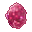
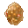
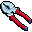
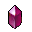

Forja e gemas
Do começo ao fim: onde comprar cada coisa, como abrir socket, engastar, combinar, subir e tirar gemas, com as chances e os preços reais deste servidor.
- 1. EscolherQue gema vai em qual peça (tabela por classe abaixo).
- 2. JuntarGema, pedra de refino e material do socket.
- 3. SocketAbre o espaço na peça: 100%.
- 4. ForjarEngasta a gema no nível 1 (100%).
- 5. CombinarDuas gemas iguais viram uma de nível acima.
- 6. SubirForje de novo com gema e refino de nível maior: o socket vai direto ao nível deles.
Onde fazer (ferreiros)
| NPC | Onde | Opções no menu |
|---|---|---|
| Blacksmith - Goldie | Argent 2193, 2706 | Socket · Forge · Combine · Gem Extraction |
| Blacksmith - Smithy | Shaitan 902, 3495 | Socket · Forge · Gem Extraction |
| Blacksmith - Bash | Icicle 1344, 529 | Socket · Forge · Gem Extraction |
| Grocery - Amos | Shaitan 840, 3585 | Combine (e vende o Gem Composition Scroll) |
| Blacksmith - Uncle Jin | Dream Island 362, 651 | Forge · Socket (no menu: "Fusion") |
| Physician - Strong | Dream Island 392, 550 | Combine (e vende o pergaminho) |
| Furnace of Immortality | Deep Blue 3257, 2502 | Extract Gem |
O Goldie em Argent faz as quatro coisas. Os outros menus dos ferreiros (Effectiveness, Equipment Upgrade, Apparel Fusion) são de visuais e de conjuntos especiais, não de gemas.
Passo a passo: primeira gema, do zero ao nível 3
Exemplo: Gem of Rage nível 3 na espada de uma Crusader. O caminho é o mesmo para qualquer gema e peça.
- Compre o material do socket na Store, aba Forging:
 Equipment Stabilizer e
Equipment Stabilizer e  Equipment Catalyst (150 mil cada).
Equipment Catalyst (150 mil cada). - Abra o socket no Goldie (Argent 2193, 2706) → Socket: a espada no 1º espaço, os dois itens nos outros, pague 50 mil. Sempre dá certo.
- Compre a gema e a pedra de refino do nível que você quer: Gem of Rage nível 3 (Store, aba Gems) e uma pedra de refino nível 3 (Refining Gem nível 3, ou combine quatro
 Fine Refining Stone: 100%).
Fine Refining Stone: 100%). - Forje no Goldie → Forge: espada + Gem of Rage + pedra de refino, pague 100 mil. O socket vai direto ao nível 3 (+7 STR). Até o 3 a forja é 100%.
- Do 4 em diante: só combinando gemas (a Store vende até o 3), e a forja passa a poder falhar: use o

Refining Catalyst antes de cada forja e o
Composition Catalyst antes de combinar.
| Etapa | O que entra | Custo |
|---|---|---|
| Socket | 350 mil | |
| Forja | Gem of Rage nível 3 (144 mil) + pedra de refino nível 3 (70 mil) + taxa 100 mil | 314 mil |
| Total | Gem of Rage nível 3 (+7 STR) na espada | 664 mil |
A Crusader usa duas espadas: faça o mesmo na outra (o efeito soma).
Lista de compras: onde conseguir cada item
| Item | Para quê | Onde conseguir |
|---|---|---|
| Socket (1 por socket) | Store aba Forging: 150.000 baús: Daily Supply, Mystery Box | |
| Socket (1 por socket) | Store aba Forging: 150.000 baús: Daily Supply, Mystery Box | |
| Combinar (1 por tentativa) | NPC Grocery - Amos, Magical Ocean 840, 3585 · 5.000 NPC Physician - Strong, Dream Island 392, 550 · 5.000 NPC Beach Shop - Xiao Li, Dream Island 471, 622 · 5.000 Cai de Evil Blood Polliwog (nv 47, Ascaron (Ocean 2A)) 3% missão Lost Items (Sailer - Coddy); missão Medication for Nausea (Builder - Franklin) | |
| Forjar (1 por forja, nível ≥ ao que o socket vai ter) | Store aba Gems: nv 1 100.000 · nv 2 207.500 · nv 3 422.500 Cai de Death Knight (nv 45, Forsaken City, andar 3) 100%; Huge Mud Monster (nv 50, Dark Swamp) 100%; Snowman Warlord (nv 65, Demonic World, andar 2) 100% baús: Christmas Sock | |
| Forjar: pedra de refino nível 1 barata | Store aba Forging: 10.000 | |
| Refining Catalyst | Forjar: +40% por 60 s | Store aba Forging: 30.000 baús: Paradise Pouch |
| Forjar: +40% por 60 s (mesmo efeito, 5× mais cara) | Store aba Forging: 150.000 missão Talisman (Grocery - Luna) | |
| Composition Catalyst | Combinar: +20% por 60 s | Store aba Forging: 30.000 baús: Paradise Pouch |
| Combinar: +20% por 60 s (mesmo efeito, 5× mais cara) | Store aba Forging: 150.000 missão Talisman (Grocery - Luna) | |
 1st Slot Blacksmith's Plier | Tirar a gema do 1º socket | Store aba Forging: 150.000 |
| 2nd Slot Blacksmith's Plier | Tirar a gema do 2º socket | Store aba Forging: 200.000 |
| 3rd Slot Blacksmith's Plier | Tirar a gema do 3º socket | Store aba Forging: 250.000 |
Preços em gold. NPC cobra o preço cheio do item.
1. Abrir socket
- Fale com um ferreiro (Goldie, Smithy, Bash ou Uncle Jin) e escolha Socket (no Uncle Jin o nome é Fusion).
- Coloque o equipamento, um Equipment Stabilizer e um Equipment Catalyst.
- Pague 50 mil × (sockets que a peça já tem + 1): 50 mil o 1º, 100 mil o 2º, 150 mil o 3º.
Sempre funciona (100%). Máximo de 3 sockets por peça. Os dois itens somem a cada socket. Visuais (apparels) não aceitam socket nem gema.
Socket só abre espaço; a peça não ganha nada até você forjar uma gema nele.
2. Forjar: engastar e subir a gema
- Fale com um ferreiro e escolha Forge.
- Coloque o equipamento, a gema e uma pedra de refino (Refining Gem ou Fine Refining Stone).
- Pague 100 mil × (1 + soma dos níveis de todas as gemas já na peça).
- O socket vai direto ao nível da gema, limitado pelo nível da pedra de refino: gema nível 3 + refino nível 3 num socket vazio = socket nível 3. (Até 27/out subia só um nível por forja.)
- Gema nova ocupa o 1º socket livre. Gema que a peça já tem não ocupa outro socket: leva aquele socket ao nível dela. Para subir, gema e pedra de refino precisam ter nível maior que o do socket.
- A chance é a do nível que o socket alcança: pular do 0 ao 9 tem a chance do 9.
- Cada forja gasta a gema e a pedra de refino, dando certo ou não. Se falhar, o equipamento fica intacto e o socket continua no nível em que estava.
- A gema tem que servir naquele tipo de peça (tabela Cada gema, abaixo).
| Socket vai ao nível | Gema e refino | Chance | Com Refining Catalyst | Taxa* | Custo médio** | Custo direto do socket vazio |
|---|---|---|---|---|---|---|
| 1 | nível 1+ | 100% | 100% | 100 mil | 137 mil | 137 mil |
| 2 | nível 2+ | 100% | 100% | 100 mil | 191 mil | 191 mil |
| 3 | nível 3+ | 100% | 100% | 100 mil | 314 mil | 314 mil |
| 4 | nível 4+ | 75% | 100% | 100 mil | 607 mil | 607 mil |
| 5 | nível 5+ | 65% | 100% | 100 mil | 1,2 milhão | 1,2 milhão |
| 6 | nível 6+ | 55% | 95% | 100 mil | 2,9 milhões | 2,9 milhões |
| 7 | nível 7+ | 45% | 85% | 100 mil | 8,5 milhões | 8,5 milhões |
| 8 | nível 8+ | 35% | 75% | 100 mil | 29,5 milhões | 29,5 milhões |
| 9 | nível 9+ | 25% | 65% | 100 mil | 127,2 milhões | 127,2 milhões |
* Com só essa gema na peça; cada nível das outras gemas da peça soma 100 mil à taxa. ** Gem of Rage e pedra de refino pelo caminho mais barato (Store até o 3, combinando com o catalisador depois), com o Refining Catalyst (30 mil) nas forjas que podem falhar, já contando as falhas.
Refining Catalyst (Store, aba Forging, 30 mil) e  Blue Forging Fruit (150 mil) dão o mesmo efeito: +40% de chance na forja por 60 segundos. Não funcionam navegando.
Blue Forging Fruit (150 mil) dão o mesmo efeito: +40% de chance na forja por 60 segundos. Não funcionam navegando.
3. Combinar gemas e pedras de refino
- Fale com quem tem Combine: Goldie (Argent), Amos (Shaitan) ou Strong (Dream Island).
- Coloque um
 Gem Composition Scroll (5 mil no Amos ou no Strong) e duas gemas iguais, do mesmo nível (o mesmo item: Gem of Rage com Gem of Rage, não com Broken Gem of Rage).
Gem Composition Scroll (5 mil no Amos ou no Strong) e duas gemas iguais, do mesmo nível (o mesmo item: Gem of Rage com Gem of Rage, não com Broken Gem of Rage). - Pague 5 mil.
| Subir para o nível | 2 | 3 | 4 | 5 | 6 | 7 | 8 | 9 |
|---|---|---|---|---|---|---|---|---|
| Gema | 100% | 90% | 80% | 70% | 60% | 50% | 40% | 30% |
| Gema com Composition Catalyst | 100% | 100% | 100% | 89% | 80% | 70% | 60% | 50% |
| Pedra de refino | 100% | 100% | 100% | 95% | 90% | 85% | 80% | 75% |
- Se falhar, as duas gemas e o pergaminho somem.
- Composition Catalyst (Store, aba Forging, 30 mil) e
 Red Combining Fruit (150 mil) dão o mesmo efeito: +20% ao combinar por 60 segundos (dá para fazer várias combinações dentro do minuto). Vale para gemas e pedras de refino.
Red Combining Fruit (150 mil) dão o mesmo efeito: +20% ao combinar por 60 segundos (dá para fazer várias combinações dentro do minuto). Vale para gemas e pedras de refino. - As pedras de refino combinam do mesmo jeito: duas Fine Refining Stone viram uma de nível 2 com 100%. É o jeito barato de ter refino nível 2 a 4 (30 mil, 70 mil e 150 mil, contra 208 mil, 422 mil e 855 mil com a Refining Gem).
- Gemas de nível máximo 1 (Azrael's, Jades, Lock's, Bing's...) não combinam; as do Black Dragon vão só até o 2.
Detalhe do código: se a combinação falhar e houver um Composition Catalyst no 1º espaço da mochila, ele também é gasto. Guarde os catalisadores em outro espaço.
4. Tirar a gema (alicate)
- Fale com um ferreiro (Goldie, Smithy ou Bash) e escolha Gem Extraction, ou use a Furnace of Immortality em Deep Blue 3257, 2502.
- Coloque o equipamento e o alicate do socket que quer esvaziar: 1st Slot Blacksmith's Plier (150 mil), 2nd Slot Blacksmith's Plier (200 mil) ou 3rd Slot Blacksmith's Plier (250 mil), todos na aba Forging.
- Pague 10 mil × soma dos níveis das gemas da peça.
Você recebe a gema no nível do socket e o socket desce um nível (no nível 1, ele fica vazio). Os sockets contam na ordem em que as gemas entraram. Serve para levar uma gema boa para a arma nova.
Cada gema: efeito, nível máximo e onde encaixa
| Gema | Nível máx. | Efeito no nível máximo | Encaixa em |
|---|---|---|---|
| 9 | +24 ataque | espada | |
| 9 | +36 ataque | espadão, arco, arma de fogo, adaga, cajado | |
| 9 | +60 ataque | arco, arma de fogo | |
| 9 | +30 precisão | todas as armas, luvas | |
| 9 | +30 defesa | escudo, armadura, tatuagem | |
| 9 | +600 HP máximo | escudo, armadura, tatuagem | |
| 9 | +12 esquiva | todas as armas, botas | |
| 9 | +6 SPR | todas as armas, botas | |
| 9 | +20 AGI | botas | |
| 9 | +20 ACC | luvas | |
| 9 | +20 CON | escudo, armadura, tatuagem | |
| 9 | +20 STR | todas as armas | |
| 2 | +100 ataque | todas as armas | |
| 2 | +6 resistência física | escudo, armadura, tatuagem | |
| 2 | +1.000 HP máximo | luvas, botas | |
| 9 | +20 SPR | todas as armas | |
| 1 | +10 defesa | capacete | |
| 1 | +200 HP máximo | capacete | |
| 1 | +200 SP máximo | capacete | |
| 1 | +10 crítico | capacete | |
| 1 | +10 precisão | luvas | |
| 1 | +10 esquiva | botas | |
| Feng's Defense | 1 | +15 defesa | armadura, tatuagem |
 Shark's Strengthening | 1 | +300 HP máximo | armadura, escudo, tatuagem |
| 1 | +8 STR | todas as armas | |
| 1 | +8 CON | escudo, armadura, tatuagem | |
| 1 | +8 SPR | todas as armas, armadura, tatuagem | |
| 1 | +8 ACC | todas as armas, luvas | |
| 1 | +8 AGI | botas | |
| Apollo's spirit | 1 | +1 resistência física | todas as armas |
| Cupid's spirit | 1 | +1 HP máximo | escudo, armadura, tatuagem |
| Athene's spirit | 1 | +1 SPR | luvas, botas |
| 9 | +8 AGI | botas | |
| 9 | +12 AGI | botas | |
| 9 | +16 AGI | botas | |
| 9 | +8 ACC | arco, arma de fogo, luvas | |
| 9 | +12 ACC | luvas | |
| 9 | +16 ACC | luvas | |
| 9 | +8 CON | escudo, armadura, tatuagem | |
| 9 | +12 CON | escudo, armadura, tatuagem | |
| 9 | +16 CON | escudo, armadura, tatuagem | |
| 9 | +8 STR | todas as armas | |
| 9 | +12 STR | todas as armas | |
| 9 | +16 STR | todas as armas | |
| 9 | +8 SPR | todas as armas | |
| 9 | +12 SPR | todas as armas | |
| 9 | +16 SPR | todas as armas | |
| 9 | +27 STR | todas as armas | |
| 9 | +27 SPR | todas as armas | |
| 9 | +27 ACC | luvas | |
| 9 | +27 CON | escudo, armadura, tatuagem | |
| 9 | +27 AGI | botas | |
| 1 | +3 ACC | arco, arma de fogo |
O efeito cresce por igual a cada nível (arredondado): Gem of Rage dá +2 no nível 1, +7 no 3, +13 no 6 e +20 no 9. SPR aparece como STA no código.
Onde conseguir cada gema
- Store, aba Gems: todas as gemas de atributo, as de ataque e a Refining Gem, nos níveis 1 a 3 (do 4 ao 9, só combinando).
- Store, aba Forging: as gemas de nível máximo 1 (Azrael's, Jades, Lock's, Bing's, Chiatan's, Shark's, Locke's Power), pedras de refino e catalisadores.
- Bosses: além do drop, 25% das recompensas de boss dão um vale-gema que vira gema ao usar.
| Gema | Onde conseguir |
|---|---|
| Store aba Gems: nv 1 26.700 · nv 2 60.800 · nv 3 143.500 Cai de Abyss Lord - Phantom Baron (nv 120) 100%; Victory Goddess (nv 75) 30%; Victory Goddess (nv 60) 30% baús: Christmas Sock, Fortune Packet | |
| Store aba Gems: nv 1 26.700 · nv 2 60.800 · nv 3 143.500 Cai de Abyss Lord - Demon Flame (nv 140) 100%; Huge Cyborg (nv 85, Black Dragon Lair) 1,8%; Beardy Pirate Warship (nv 70, Deep Blue (Ocean 5B)) 0,24% baús: Christmas Sock | |
| Store aba Gems: nv 1 26.700 · nv 2 60.800 · nv 3 143.500 Cai de Demonic Yeti (nv 65, Demonic World, andar 2) 0,30%; Feral Diamond Dolphin (nv 70, Deep Blue (Ocean 9A)) 0,24%; Confused Snow Doll (nv 59, Demonic World, andar 2) 0,24% baús: Christmas Sock | |
| Store aba Gems: nv 1 26.700 · nv 2 60.800 · nv 3 143.500 Cai de Demonic Yeti (nv 65, Demonic World, andar 2) 0,30%; Frenzied Siren (nv 71, Deep Blue (Ocean 10A)) 0,27%; Amethyst Dolphin (nv 67, Magical Ocean (Ocean 4C)) 0,21% baús: Christmas Sock | |
| Store aba Gems: nv 1 26.700 · nv 2 60.800 · nv 3 143.500 Cai de Demonic Yeti (nv 65, Demonic World, andar 2) 1,5%; Berserk Mermaid Protector (nv 71, Magical Ocean (Ocean 4B)) 0,27%; Old Ruby Dolphin (nv 68, Magical Ocean (Ocean 6C)) 0,24% baús: Christmas Sock | |
| Store aba Gems: nv 1 26.700 · nv 2 60.800 · nv 3 143.500 Cai de Despair Knight - Saro (nv 80) 100%; Abyss Mudmonster - Karu (nv 80) 100%; Abyss Prisoner - Aruthur (nv 80) 100% baús: Christmas Sock | |
| Store aba Gems: nv 1 26.700 · nv 2 60.800 · nv 3 143.500 Cai de Despair Knight - Saro (nv 80) 100%; Abyss Mudmonster - Karu (nv 80) 100%; Abyss Demon - Sacrois (nv 80) 100% baús: Christmas Sock | |
| Store aba Gems: nv 1 26.700 · nv 2 60.800 · nv 3 143.500 Cai de Abyss Beast - Kuroo (nv 100) 15%; Beardy Pirate Command Ship (nv 73, Deep Blue (Ocean 5B)) 0,30%; Demonic Snowman (nv 61, Demonic World, andar 2) 0,30% baús: Christmas Sock | |
| Store aba Gems: nv 1 26.700 · nv 2 60.800 · nv 3 143.500 Cai de Abyss Lord - Evil Beast (nv 120) 6%; Abyss Lord - Tyran (nv 140) 6%; Abyss Lord - Phoenix (nv 120) 6% baús: Lucky Gift Parcel, Christmas Sock, 99 Parcel | |
| Store aba Gems: nv 1 26.700 · nv 2 60.800 · nv 3 143.500 Cai de Abyss Lord - Tyran (nv 140) 6%; Abyss Lord - Despair (nv 140) 6%; Death Knight (nv 45, Forsaken City, andar 3) 1,2% baús: Lucky Gift Parcel, Christmas Sock, 99 Parcel | |
| Store aba Gems: nv 1 26.700 · nv 2 60.800 · nv 3 143.500 Cai de Abyss Lord - Drakan (nv 120) 6%; Black Dragon Lance (nv 75, Chaos Argent) 1,5%; Black Dragon Carsise (nv 75, Chaos Argent) 1,5% baús: Lucky Gift Parcel, Christmas Sock, 99 Parcel | |
| Store aba Gems: nv 1 26.700 · nv 2 60.800 · nv 3 143.500 Cai de Abyss Lord - Tidal (nv 140) 2,1%; Black Dragon Lance (nv 75, Chaos Argent) 1,5%; Black Dragon Carsise (nv 75, Chaos Argent) 1,5% baús: Lucky Gift Parcel, Christmas Sock | |
| Cai de Black Dragon (nv 90, Black Dragon Lair) 90,1%; Revived Soul of Goddess (nv 70) 10,2%; Abyss Lord - Hardin (nv 160) 10,2% | |
| Cai de Black Dragon (nv 90, Black Dragon Lair) 90,1%; Revived Soul of Goddess (nv 70) 10,2%; Abyss Lord - Hardin (nv 160) 10,2% | |
| Cai de Black Dragon (nv 90, Black Dragon Lair) 100%; Revived Soul of Goddess (nv 70) 10,2%; Abyss Lord - Hardin (nv 160) 10,2% | |
| Store aba Gems: nv 1 26.700 · nv 2 60.800 · nv 3 143.500 Cai de Death Knight (nv 45, Forsaken City, andar 3) 1,2%; Huge Mud Monster (nv 50, Dark Swamp) 1,2%; Snowman Warlord (nv 65, Demonic World, andar 2) 1,2% baús: Christmas Sock | |
| Store aba Forging: 60.000 | |
| Store aba Forging: 60.000 | |
| Store aba Forging: 60.000 | |
| Store aba Forging: 100.000 | |
| Store aba Forging: 100.000 | |
| Store aba Forging: 100.000 | |
| Feng's Defense | Store aba Forging: 100.000 |
| Shark's Strengthening | Store aba Forging: 100.000 |
| Store aba Forging: 250.000 | |
| Store aba Forging: 250.000 | |
| Store aba Forging: 250.000 | |
| Store aba Forging: 250.000 | |
| Store aba Forging: 250.000 | |
| Store aba Gems: nv 1 5.000 · nv 2 17.500 · nv 3 47.200 Cai de Wailing Archer Captain (nv 40, Forsaken City, andar 1) 60%; Wailing Warrior (nv 33, Forsaken City, andar 1) 3%; Sorrow Warrior (nv 31, Forsaken City, andar 1) 0,60% missão Mushroom Mushroom (Assistant - Rouri); missão Fake Item (Girl - Lena) | |
| Store aba Gems: nv 1 10.000 · nv 2 27.500 · nv 3 69.400 Cai de Master Swamp Bog (nv 45, Dark Swamp) 60%; Swamp Bog (nv 40, Dark Swamp) 0,60%; Swamp Watcher (nv 45, Dark Swamp) 0,60% | |
| Store aba Gems: nv 1 16.700 · nv 2 40.800 · nv 3 99.100 | |
| Store aba Gems: nv 1 5.000 · nv 2 17.500 · nv 3 47.200 Cai de Sorrow Archer Captain (nv 38, Forsaken City, andar 1) 60%; Sorrow Warrior (nv 31, Forsaken City, andar 1) 0,60%; Wailing Archer (nv 34, Forsaken City, andar 1) 0,60% | |
| Store aba Gems: nv 1 10.000 · nv 2 27.500 · nv 3 69.400 Cai de Swamp Champion (nv 55, Dark Swamp) 60%; Swamp Bog (nv 40, Dark Swamp) 0,60%; Swamp Warden (nv 55, Dark Swamp) 0,60% | |
| Store aba Gems: nv 1 16.700 · nv 2 40.800 · nv 3 99.100 | |
| Store aba Gems: nv 1 5.000 · nv 2 17.500 · nv 3 47.200 Cai de Wailing Archer Captain (nv 40, Forsaken City, andar 1) 60%; Sorrow Warrior (nv 31, Forsaken City, andar 1) 0,60%; Wailing Archer (nv 34, Forsaken City, andar 1) 0,60% | |
| Store aba Gems: nv 1 10.000 · nv 2 27.500 · nv 3 69.400 Cai de Master Swamp Bog (nv 45, Dark Swamp) 60%; Swamp Man (nv 50, Dark Swamp) 0,60%; Swamp Warden (nv 55, Dark Swamp) 0,60% | |
| Store aba Gems: nv 1 16.700 · nv 2 40.800 · nv 3 99.100 | |
| Store aba Gems: nv 1 5.000 · nv 2 17.500 · nv 3 47.200 Cai de Sorrow Captain (nv 38, Forsaken City, andar 1) 60%; Wailing Warrior (nv 33, Forsaken City, andar 1) 0,60%; Wailing Archer (nv 34, Forsaken City, andar 1) 0,60% missão Shroom Population (Argent Secretary - Salvier); missão Kicking Monster (Coaster Guard - Franco) | |
| Store aba Gems: nv 1 10.000 · nv 2 27.500 · nv 3 69.400 Cai de Master Swamp Watcher (nv 50, Dark Swamp) 60%; Swamp Man (nv 50, Dark Swamp) 0,60% | |
| Store aba Gems: nv 1 16.700 · nv 2 40.800 · nv 3 99.100 | |
| Store aba Gems: nv 1 5.000 · nv 2 17.500 · nv 3 47.200 Cai de Wailing Captain (nv 40, Forsaken City, andar 1) 60%; Wailing Warrior (nv 33, Forsaken City, andar 1) 0,60%; Sorrow Archer (nv 32, Forsaken City, andar 1) 0,60% missão Conservation Activity (Blacksmith - Goldie); missão Scorpion Phobia (Blacksmith - Smithy) | |
| Store aba Gems: nv 1 10.000 · nv 2 27.500 · nv 3 69.400 Cai de Swamp Champion (nv 55, Dark Swamp) 60%; Swamp Watcher (nv 45, Dark Swamp) 0,60% | |
| Store aba Gems: nv 1 16.700 · nv 2 40.800 · nv 3 99.100 | |
| Store aba Gems: nv 1 50.000 · nv 2 107.500 · nv 3 247.200 | |
| Store aba Gems: nv 1 50.000 · nv 2 107.500 · nv 3 247.200 | |
| Store aba Gems: nv 1 50.000 · nv 2 107.500 · nv 3 247.200 | |
| Store aba Gems: nv 1 50.000 · nv 2 107.500 · nv 3 247.200 | |
| Store aba Gems: nv 1 50.000 · nv 2 107.500 · nv 3 247.200 | |
| Store aba Forging: 100.000 |
Drop: chance por monstro já com a taxa do servidor. Mapas das dungeons em Dungeons. Sem fonte fixa (só evento): Apollo's spirit, Cupid's spirit, Athene's spirit.
Melhores gemas por classe
- Cada peça leva até 3 gemas diferentes: colocar a mesma gema de novo só sobe o nível dela, não ocupa outro socket.
- Mas cada família é uma gema diferente: Broken, Cracked, Chipped, Gem e Great Gem do mesmo atributo ocupam sockets separados e somam (Great Gem of Rage + Gem of Rage + Chipped Gem of Rage = +63 de STR no nível 9).
- As de nível máximo 1 (Azrael's, Lock's, Bing's, Feng's, Shark's, Locke's Power) são da Store e não sobem: as Azrael's (+8, 250 mil) custam o mesmo que uma Great Lv 3 de mesmo bônus; as outras (60–100 mil) servem para começar e depois dão lugar às que sobem até o 9.
- Para quem bate com STR ou ACC, o atributo rende mais ataque quanto mais você já tem: no começo a gema de ataque (Fiery, Furious, Explosive) ganha; com o atributo alto, as três da família ganham.
Champion STR e CON
| Peça | Para começar | Objetivo (nível 9) | Por quê |
|---|---|---|---|
| Espadão | No começo a Furious (+36 de ataque) rende mais; com STR alta, as três de Rage (+27, +20 e +16 de STR no nível 9) passam muito. | ||
| Armadura / tatuagem | CON dá HP e defesa; a Shining soma +600 de HP no 9. | ||
| Luvas | Precisão para não errar; no fim, o coração do dragão (+1.000 de HP). | ||
| Botas | Esquiva e HP; AGI só se quiser atacar mais rápido. |
Crusader AGI até a velocidade de ataque 210, depois STR
| Peça | Para começar | Objetivo (nível 9) | Por quê |
|---|---|---|---|
| Cada espada (as duas) | O ataque do Crusader vem só da STR (1,5 por ponto e sobe com ela), então a Rage ganha da Fiery desde o começo: Great Lv 3 = +9 STR, uns +16 de ataque; Fiery Lv 3 = +8. As duas espadas somam: são até 6 gemas de STR. | ||
| Botas | AGI só até a velocidade de ataque 210, que o Crusader alcança com 116 de AGI somando equipamento e gemas: as de Wind ajudam a chegar lá antes e liberam pontos para STR. Depois, troque por Shadow Gem (esquiva). | ||
| Armadura | O Crusader tem pouca CON: HP e defesa vêm daqui. Cada CON vale ~10 de HP, então a Shining (+200 no Lv 3, +600 no 9) rende mais HP que a Colossus. | ||
| Luvas | Precisão (o Crusader quase não tem ACC) e HP. |
Sharpshooter ACC (e um quarto de AGI)
| Peça | Para começar | Objetivo (nível 9) | Por quê |
|---|---|---|---|
| Arco / arma de fogo | A Explosive (+60 de ataque) é a melhor gema de arma do jogo e só entra em arco e arma de fogo. A Broken Gem of Striking é a única de ACC que entra na arma. | ||
| Luvas | ACC é o dano do Sharpshooter: as três de Striking somam +63 de ACC no nível 9 (cada ponto vale ~6 de ataque no 100 de ACC). | ||
| Botas | AGI para a velocidade de ataque. | ||
| Armadura | Só sobrevivência. |
Cleric SPR até o 60, depois CON
| Peça | Para começar | Objetivo (nível 9) | Por quê |
|---|---|---|---|
| Cajado | SPR (STA no código) é a cura, o dano mágico e o SP: as três de Soul somam +63 no nível 9. | ||
| Armadura | Até o 60, a Azrael's Light (+8 de SPR) também entra na armadura; depois, CON. | ||
| Botas | A Spirit Gem soma SPR nas botas. | ||
| Luvas | — | Nada de luva ajuda magia; só o HP do dragão no fim. |
Seal Master CON (70%) e SPR (30%)
| Peça | Para começar | Objetivo (nível 9) | Por quê |
|---|---|---|---|
| Cajado | O dano dos selos vem do SPR. | ||
| Armadura | A build é CON: as três de Colossus somam +63 de CON no nível 9. | ||
| Botas | |||
| Luvas | — |
Voyager SPR até o 40, depois SPR e CON
| Peça | Para começar | Objetivo (nível 9) | Por quê |
|---|---|---|---|
| Adaga | Adaga aceita a Furious, mas o dano do Voyager é mágico (SPR). | ||
| Armadura | |||
| Botas | |||
| Luvas | — |
Ordem: a 1ª gema de cada lista é a que mais rende primeiro. Arma e botas antes da armadura.
Brilho da arma (o +27) e custo dos níveis altos
Armas e equipamentos com gema brilham. O tipo das gemas escolhe o efeito; a soma dos níveis das 3 gemas escolhe a força:
| Soma dos níveis | 1–4 | 5–8 | 9–12 | 13+ |
|---|---|---|---|---|
| Brilho | fraco | médio | forte | máximo |
O brilho chega ao máximo com a soma 13 (por exemplo 5 + 4 + 4). O famoso "+27", três sockets no nível 9 na mesma peça, não brilha mais que isso: é a conquista de fim de jogo pelos status.
O tipo vem da série de cada gema: ataque (Fiery, Furious, Explosive, Lustrious...), defesa (Glowing, Shining, Shadow...) ou atributo (Rage, Soul, Colossus, Wind, Striking...). Duas gemas da mesma série contam como uma; misturar séries muda o efeito.
| Uma Gem of Rage, custo médio | nível 5 | nível 7 | nível 9 |
|---|---|---|---|
| Combinando sem catalisador | 1,1 milhão | 14,4 milhões | 480,9 milhões |
| Com Composition Catalyst (+20%) | 771 mil | 5,7 milhões | 76,5 milhões |
Conta com as chances reais, o pergaminho, a taxa e as falhas. Levar o socket ao 9 pede uma gema e uma pedra de refino nível 9: a forja leva direto ao nível delas.
Dicas
- Ordem que mais rende: socket → forjar até o 3 (100%, tudo da Store) → arma e botas primeiro, armadura depois.
- Catalisador de 30 mil, nunca a fruta de 150 mil: mesmo efeito. Refining Catalyst na forja, Composition Catalyst ao combinar.
- Pedra de refino: Fine Refining Stone (10 mil) combinada sai bem mais barata que a Refining Gem.
- Do 4 ao 5, a forja com Refining Catalyst é 100%: o risco de verdade começa no 6.
- Gema nova sempre entra no nível 1: guarde a de nível alto para subir um socket que já está perto.